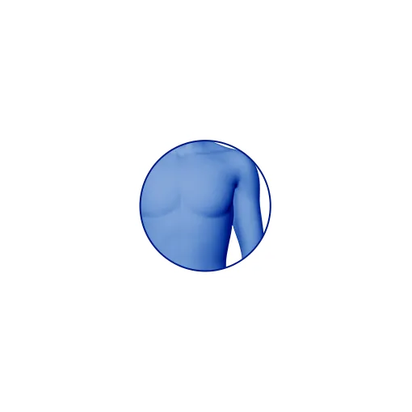
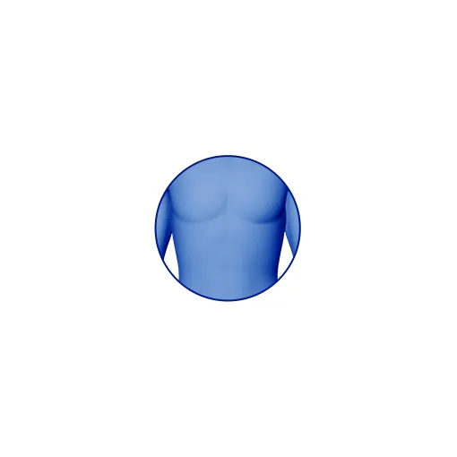
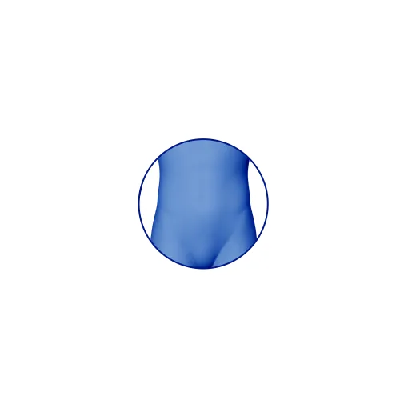
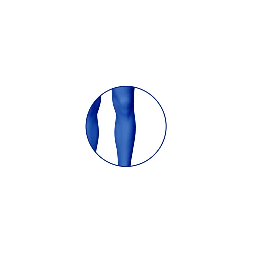
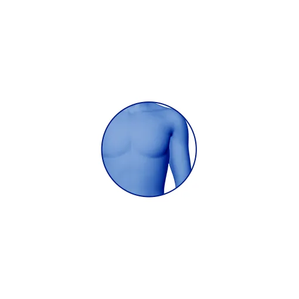
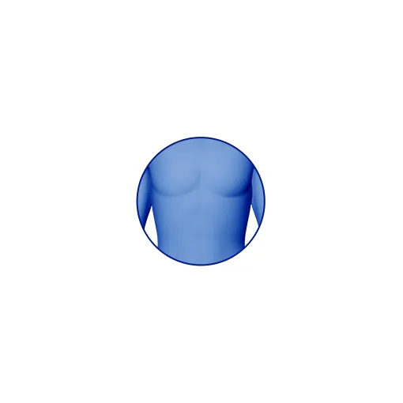
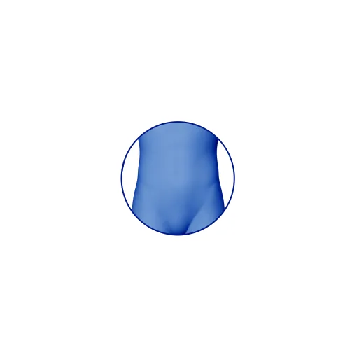
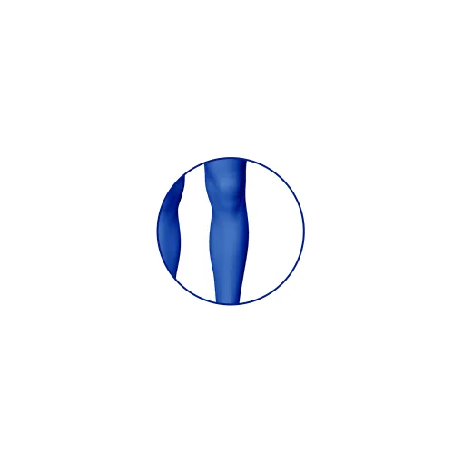

Zmęczenie i nerwowość1
nie muszą rządzić Twoim
życiem!
Odkryj metody
na poprawę
samopoczucia!

Magne B6 FORTE
100 tabl.
Magne B6 FORTE
60 tabl.
Magne B6
60 tabl.
Istnieje związek pomiędzy stresem a niedoborem magnezu. Niedobór magnezu zwiększa podatność na stres

Niedobór magnezu może skutkować uczuciem zmęczenia

Magnez, magnezowi nierówny!
- jak prawidłowo go dawkować?
1
Stosuj odpowiednią
ilość i podzielone
dawki
3 do 4 tabletek Magne B6
Forte, w 2-3 dawkach
podzielonych
2
Wybierz
odpowiedni preparat
Zwróć uwagę na
przyswajalność magnezu,
wybierając preparaty
zawierające organiczne sole,
takie jak cytrynian czy
mleczan.5
3
Wybierz preparat
z witaminą B6
Witamina B6 zwiększa
wchłanianie magnezu
i wspomaga jego transport
do komórek
w organizmie.5
Sprawdź dawkowanie poszczególnych
Jak zadbać
o dobrostan psychiczny?
Prawdziwy dobrostan psychiczny to nie tylko brak chorób, ale również radość i satysfakcja z życia. Niestety, nasza codzienność często pełna jest stresu, presji w pracy, braku snu i przewlekłego zmęczenia. Poszukujesz równowagi pomiędzy życiem zawodowym a prywatnym?
Przygotowaliśmy sześć porad, które pomogą Ci znaleźć właściwą dla siebie równowagę:

Dlaczego warto brać magnez?
Magnez to pierwiastek mający szczególnie ważne znaczenie biologiczne.
Bierze on udział np. w pracy nerwów (neuronów), wpływa na pracę serca, ciśnienie tętnicze czy kości.7
Gdy magnezu
zaczyna brakować,
cierpi na tym cały
Twój organizm.
Jak ukoić nerwy
i radzić sobie ze stresem?
Stresująca praca, wiosenny remont w domu, pojawienie się nowego członka rodziny, czy egzaminy - każdy z nas czasami doświadcza wzmożonego napięcia.
Niedobór magnezu może objawiać się
w następujący sposób2:
- nerwowość
- drażliwość
- wahania nastroju
- łagodny lęk
- niepokój
- ospałość
- zaburzenia snu w niewielkim nasileniu

Zwróć uwagę na możliwe
objawy niedoboru magnezu
Gdy odczuwasz ciągłe zmęczenie, przyczyną może być nadmiar stresu w Twoim życiu. Być może praca wymaga od Ciebie dużo wysiłku, przygotowujesz się intensywnie do egzaminów maturalnych lub rozpoczynasz sesję letnią na studiach?
Wsłuchaj się w swój organizm i zastanów się, czy nie występują u Ciebie konkretne symptomy.
 







Zaburzenia snu w niewielkim nasileniu
Mrowienie, drganie powiek
Wahania nastroju
Łagodny lęk, niepokój
Kołatanie serca
Nerwowość, drażliwość
Kurcze przewodu pokarmowego
Skurcze mięśni

Postaw na aktywność fizyczną!
Nawet łagodne, relaksujące ćwiczenia nie wymagające intensywnego wysiłku na siłowni, pomogą w redukcji stresu.
?
Czy wiesz, że...
Osoby aktywne fizycznie mają niższe stężenie kortyzolu (hormonu stresu) we krwi.8
Ćwiczenia relaksacyjne, które
pomogą obniżyć stres i napięcie9,10
góra
- Mobilizuje do pracy cale ciało, jednocześnie harmonizując i wyciszając
- Pozwala odnaleźć koncentrację
- Buduje poczucie równowagi
Jak wykonać?
- Stań prosto i połącz stopy
- Przenieś ciężar ciała na pięty
- Opuść kość ogonową i pośladki w dół
- Podciągnij dół brzucha, pępek i mostek do góry
- Skręć ramiona na zewnątrz, ściągnij barki w dół i wydłuż szyję
- Wnętrza dłoni zwróć w stronę bioder
- Unieś czubek głowy i zaciśnij przody ud
- Oddychaj swobodnie

okręt
- Stymuluje organy wewnętrzne
- Poprawia trawienie
- Uczy utrzymania równowagi
- Wzmacnia mięśnie brzucha i przody ud
Jak wykonać?
- Usiądź, wyprostuj się i połącz nogi
- Ustaw stopy w pionie
- Zegnij nogi, wsuń dłonie w tył kolan, podciągając je do klatki piersiowej
- Oderwij stopy od ziemi
- Wyprostuj plecy i ręce
- Wyprostuj nogi
- Spróbuj złapać równowagę

ROZCIĄGANIE W SKŁONIE DO PRZODU
- Pozwala na łagodne wydłużenie kręgosłupa
- Otwiera tył nóg i pozwala na łagodne zgięcie w biodrach
- Uelastycznia obszar barków i pach
Jak wykonać?
- Podejdź do ściany lub drzwi
- Oprzyj dłonie na wysokości barków, lekko rozsuń palce
- Skieruj palce środkowe idealnie do przodu
- Odejdź stopami do tyłu i pochyl tułów
- Ustaw stopy pod biodrami, dłonie pozostaw na pierwotnej wysokości
- Próbuj „odepchnąć się” dłońmi od ściany lub drzwi
- Pamiętaj o oddechu!

SIAD SKRZYŻNY
- Rozluźnia obszar krzyżowo-biodrowy
- Wycisza układ nerwowy
Jak wykonać?
- Usiądź
- Skrzyżuj nogi tak, aby stopy znajdowały się pod kolanami
- Kolana powinny być poniżej bioder
- Dłonie ułóż na udach
- Pochyl tułów do przodu, próbując dosięgnąć mostkiem do goleni
- Głowę utrzymuj w linii kręgosłupa
- Pochylając się – wypuszczaj powietrze
- Prostując się – bierz wdech
- Po kilku oddechach zmień splot nóg

FAQ
Dlaczego niedobór magnezu daje objawy podobne do objawów stresu?

Jedną z ról magnezu w organizmie człowieka jest hamowanie nadmiernej reakcji na stres, dlatego poziom tego pierwiastka w naszym organizmie jest związany z poziomem odczuwanego stresu.1
Jakie są przyczyny niedoboru magnezu?
Większość Polaków zmaga się z niewystarczającą podażą magnezu - nawet 61-90% mężczyzn i 52-70% kobiet może mieć zbyt niski poziom tego pierwiastka.1 Dieta bogata w przetworzone produkty, tłuszcze i wapń utrudnia przyswajanie magnezu przez organizm. Ponadto, stosowanie nawozów sztucznych w rolnictwie i kwaśne deszcze wpływają na ubóstwo gleb w składniki mineralne i obniżają ich zawartość w żywności.11 W związku z tym, zapewnienie odpowiedniej ilości magnezu w diecie staje się coraz trudniejsze7, co może prowadzić do zaburzeń wchłaniania magnezu i wzrostu liczby osób z niedoborami tego pierwiastka.
Jakie są skutki niedoboru magnezu?
-
Stres zmniejsza poziom magnezu w organizmie, prowadząc do jego
niedoboru, a niedobór magnezu zwiększa podatność na stres.12
Skutki niedoboru magnezu to między innymi:
- nerwowość
- drażliwość
- wahania nastroju
- niepokój
- przejściowe uczucie zmęczenia
- ospałość
- zaburzenia snu w niewielkim nasileniu
- kurcze przewodu pokarmowego
- kołatanie serca
- kurcze mięśni
- mrowienie, drganie powiek.2
Czy młodzież może przyjmować magnez?
Tak! W okresach wymagających intensywnego wysiłku umysłowego - Przed wszelkimi egzaminami, takimi jak matura czy egzaminy w ramach sesji na studiach - uczniów może ogarniać stres. Pogarsza się pamięć i zdolność koncentracji, spada spostrzegawczość, efektywność nauki oraz szybkość pracy intelektualnej, a podczas samego egzaminu może pojawić się uczucie pustki w głowie. Te objawy czasem pojawiają się u każdego z nas - nawet pomimo stosowania zróżnicowanej diety. Stres może być jedną z przyczyn niedoboru magnezu, dlatego warto przyjmować odpowiednie preparaty, aby uzupełnić poziom magnezu w organizmie.
Jaki preparat wybrać?
Wybierając preparat, warto zwrócić uwagę na jego skład. Magnez z preparatów zawierających sole organiczne np. mleczan lub cytrynian magnezu oraz dodatek witaminy B6 jest lepiej przyswajalny niż z preparatów zawierających sól nieorganiczną i niewzbogaconych o witaminę B6 .7,13 Dodatkowo rekomendację na temat rodzaju, dawkowania oraz sposobu przyjmowania magnezu możemy otrzymać od lekarza lub farmaceuty.
Jakie choroby wiążą się z niedoborem magnezu?
Większość z nas łączy niedobór magnezu tylko z objawami dotykającymi układ mięśniowy, a więc bolesnymi kurczami mięśni, drganiem powiek czy kącików ust. Dodatkowo w obrębie układu nerwowego skutkami niedoboru magnezu mogą być m.in. gorsza reakcja na stres, nerwowość, drażliwość, irytacja.7,2 Niedobór magnezu może też być związany z wieloma chorobami przewlekłymi, m.in. nadciśnieniem tętniczym, cukrzycą typu 2 i arytmią.7
Czy kawa wypłukuje magnez?
Badania pokazują, że kofeina zwiększa wydalanie wapnia, sodu i magnezu z moczem, z powodu działania moczopędnego, przy spożyciu > 300-360 mg (około czterech filiżanek kawy).14
Dowiedz się jak prawidłowo dbać o swoje zdrowie psychiczne i fizyczne.


Magne B6 Forte, tabletki powlekane, 100 mg
jonów magnezu w postaci cytrynianu magnezu i 10 mg witaminy
B6. Wskazania: niedobór magnezu. Występowanie tych
objawów może wskazywać na niedobór magnezu: nerwowość, drażliwość,
wahania nastroju, łagodny lęk, niepokój, przejściowe uczucie
zmęczenia, ospałość, zaburzenia snu w niewielkim nasileniu; objawy
lęku, takie jak kurcze przewodu pokarmowego lub kołatanie serca (bez
zaburzeń serca); kurcze mięśni, mrowienie, drganie powiek.
Uzupełnienie magnezu może złagodzić te objawy. W przypadku braku
poprawy po miesiącu stosowania leku, kontynuowanie leczenia nie jest
zalecane. Podmiot odpowiedzialny: Opella Healthcare Poland Sp. z
o.o. grupa Sanofi
{ChPL 04/2022}
MAGNE B6, tabletki powlekane, 48 mg jonów magnezu w postaci magnezu
mleczanu i 5 mg witaminy B6. Wskazania: niedobór magnezu.
Występowanie tych objawów może wskazywać na niedobór magnezu:
nerwowość, drażliwość, wahania nastroju, łagodny lęk, niepokój,
przejściowe uczucie zmęczenia, ospałość, zaburzenia snu w niewielkim
nasileniu; objawy lęku, takie jak kurcze przewodu pokarmowego lub
kołatanie serca (bez zaburzeń serca); kurcze mięśni, mrowienie,
drganie powiek. Uzupełnienie magnezu może złagodzić te objawy. W
przypadku braku poprawy po miesiącu stosowania leku, kontynuowanie
leczenia nie jest zalecane. Podmiot odpowiedzialny: Opella
Healthcare Poland Sp. z o.o. grupa Sanofi
{ChPL 04/2022}
Magne-B6 Zmęczenie i Stres, suplement diety, tabletki powlekane. Zawartość składników aktywnych w zalecanej porcji dziennej (1 tabletka): 60 mg magnezu– 16% RWS; 1,4 mg witaminy B6 – 100% RWS; 80 mg wyciągu z korzenia ashwagandhy, standaryzowanego na 5% witanolidów (Whitania somnifera). [RWS – referencyjna wartość spożycia]. Zalecane spożycie: Dorośli - 1 tabletka dziennie. Najlepiej przyjmować w godzinach porannych. Czas stosowania suplementu: 4 tygodnie. W razie potrzeby można powtórzyć. Nie należy przekraczać zalecanej porcji do spożycia w ciągu dnia. Suplement diety nie może być stosowany jako substytut (zamiennik) zróżnicowanej diety. Prowadzenie zdrowego trybu życia i stosowanie zrównoważonej diety jest niezbędne dla zachowania dobrego stanu zdrowia. Produkt nie może być stosowany przez osoby uczulone na którykolwiek ze składników preparatu. Stosowanie u osób będących pod kontrolą lekarza wyłącznie po konsultacji z lekarzem. Produkt nie powinien być spożywany w przypadku stosowania leków o działaniu uspokajającym, nasennym, przeciwpadaczkowym. Nie stosować u dzieci, kobiet w ciąży i w trakcie laktacji. Podmiot wprowadzający do obrotu: Opella Healthcare Poland Sp. z o.o.
Przypisy
- Występowanie nerwowości może wskazywać na niedobór magnezu.
- ChPl Magne B6 Forte 04.2022.
- Magne B6 Forte zawiera podwójną dawkę magnezu w 1 tabl. w porównaniu do Magne B6. ChPL Magne B6 i Magne B6 Forte, 04.2022.
- Halina Bojarowicz, Paulina Dźwigulska. Suplementy diety. Część II. Wybrane składniki suplementów diety oraz ich przeznaczenie. Hygeia Public Health 2012, http://www.h-ph.pl/pdf/hyg-2012/hyg-2012-4-433.pdf, data dostępu 15.03.2023.
- Anna Jabłecka, Katarzyna Korzeniowska, Anna Skołuda, Artur Cieślewicz, Preparaty magnezu. Farmacja Współczesna 2011, https://www.akademiamedycyny.pl/wp-content/uploads/2016/05/201101_Farmacja_004.pdf, data dostępu 15.03.2023.
- Z powodu niewystarczającej podaży magnezu. Jędrzejek M et al. Lekarz POZ. 2021;7(2). Waśkiewicz A et al. Kardiol Pol. 2016;74(9):969-77. Ilow R et al. Ann Agric Environ Med. 2011;18(2):235-240.
- Jędrzejek M., Mastalerz-Migas A., Bieńkowski P., Cichy W., Matusiewicz H., Szymański F., Woroń J. (2021). Stosowanie preparatów magnezu w praktyce lekarza rodzinnego, "Lekarz POZ" nr 2/2021 s. 141-150.
- Wood C., Clow A., Hucklebridge F., Law R., Smyth N., Physical fitness and prior physical activity are both associated with less cortisol secretion during psychosocial stress, 2016, https://pubmed.ncbi.nlm.nih.gov/29037088/, data dostępu: 26.03.2023.
- https://www.anahana.com/pl/yoga/yoga-poses, data dostępu 27.03.2022.
- Monika Boratyn, Joga dla Ciebie. 25 podstawowych pozycji jogi, https://www.jogadlaciebie.pl/wp-content/uploads/2019/06/Joga-dla-ciebie-ebook-25-pozycji-bw.pdf, data dostępu 27.03.2022.
- Grzebisz W. Magnez - żywność i zdrowie człowieka. Journal of Elementology. 2011;16(2):299-323. doi:10.5601/jelem.2011.16.2.13.
- Pickering G, Mazur A, Trousselard M, et al. Magnesium status and stress: The vicious circle concept revisited. Nutrients. 2020;12(12):1-21. doi:10.3390/nu12123672.
- Jabłecka A, Korzeniowska K, Skołuda A, Cieślewicz A. Preparaty magnezu. Farmacja Współczesna . Published online 2011. https://www.akademiamedycyny.pl/wp-content/uploads/2016/05/201101_Farmacja_004.pdf, data dostępu: 11.07.2022.
- Barghouthy Y, et al. Tea and coffee consumption and pathophysiology related to kidney stone formation: a systematic review. World J Urol. 2021 Jul;39(7):2417-2426.
To jest lek. Dla bezpieczeństwa stosuj go zgodnie z ulotką dołączoną do opakowania. Nie przekraczaj maksymalnej dawki leku. W przypadku wątpliwości skonsultuj się z lekarzem lub farmaceutą.
MAT-PL-2300407-1.0-04.2023